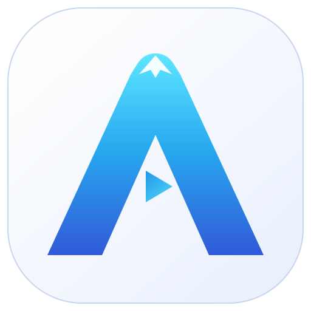

Sade ve yerel
Web sarmalayıcı değil. Rust tabanlı masaüstü uygulaması.

AlpinoxiClientAçık kaynaklı Minecraft başlatıcısı
Rust ile geliştirilen Alpinoxi Client; hesaplarını, oyun dosyalarını ve başlatma deneyimini tek bir sade yerde buluşturur.
Ücretsiz · Açık kaynak · Rust tabanlı
Web sarmalayıcı değil. Rust tabanlı masaüstü uygulaması.
Desteklenen sağlayıcılar arasından sana uygun olanı seç.
Kodu incele, projeyi takip et ve katkıda bulun.
HESAPLAR
Farklı hesap seçenekleri, tek bir başlatıcı. Çevrimdışı hesap bir oyuncu kimliğidir; internet erişimi veya çevrimiçi hizmetlere erişim sağlamaz.
Resmî Microsoft hesabınla oturum aç.
Ely.by hesabını bağla ve profilini kullan.
Yerel oyuncu adıyla hesap oluştur ve bu hesap için kişisel skin kullan.
Uyumlu özel Yggdrasil kimlik doğrulama sunucularını kullan.
ÇEVRİMDIŞI HESAP SKINLERİ
Çevrimdışı hesabına yerel bir PNG skin seç, önizle ve model türünü belirle. Skin dosyan çevrimdışı hesabında yerel olarak kullanılır.
Yalnızca seçili çevrimdışı hesap için
JAVA 8+ Skin özelliği Java 8 ve üzeriyle çalışır. Çevrimdışı başlatmada Minecraft sürümüne uygun Java önceden kurulu olmalıdır; 1.8.9 Java 8 kullanır. Skin yerel kalır, sunucuya yüklenmez.
MICROSOFT HESAPLARI
Minecraft profil skinini görüntüle, sahip olduğun pelerinleri launcher içinden seç ve skinini resmî Minecraft profilinde yönet.
SONRAKİ ADIM
Sürümleri incele, kaynak koduna göz at veya projeye katkıda bulun.
GitHub sürümleriAlpinoxi Client, Polyfrost tarafından desteklenmez veya onaylanmaz.